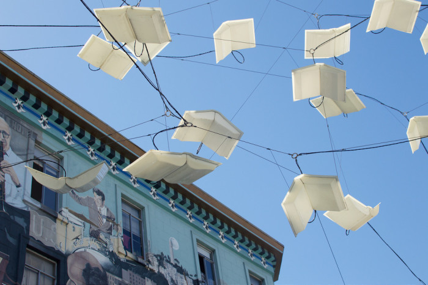

LITERARY NORTH BEACH

Welcome to Literary North Beach
a site for adventurous literati
Ground Zero for the short-lived, but highly influential Beat Generation, San Francisco's historic North Beach neighborhood has been a haven for the literarily-inclined since the turn of the 20th century.
Browse for books, drink with poets, and check out some of the sites
from North Beach's storied past.
Have a question or a tip for us? Send us an email, or tweet at us via the links below.
Enjoy your exploration of North Beach. We think you're going to have a great time!
Copyright 2017